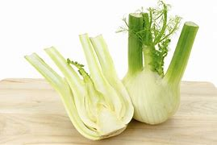

Ingredient Spotlight: Fennel

Overview
Description: Fennel is a flavorful herb with a distinctive anise flavor, used in various dishes.
Origin: Native to the Mediterranean region, fennel has been used for centuries in cooking and medicine.
Nutritional Information
| Nutrient |
Amount per 100g |
| Calories |
31 |
| Fat |
0.2g |
| Carbohydrates |
7.3g |
| Protein |
1.2g |
Health Benefits:
- Rich in vitamins and minerals, particularly vitamin C.
- May aid digestion and reduce bloating.
Culinary Uses
Flavor Profile: Fennel has a sweet, licorice-like flavor that adds depth to dishes.
Cooking Methods: Used in roasting, sautéing, or as a raw salad ingredient.
Common Dishes:
- Fennel salad
- Roasted fennel
- Fennel and sausage pasta
Storage and Preparation Tips
Storage Guidelines: Keep in the refrigerator, wrapped in a damp cloth.
Preparation Tips: Slice the bulb thinly for salads or roast in wedges.
Varieties and Substitutes
Types:
- Florence fennel
- Herb fennel
Substitutes:
Anise or celery can be used as substitutes in recipes.
Fun Facts and Trivia
- Fennel seeds are often used as a spice in Indian cuisine.
- In ancient Greece, fennel was associated with strength and vigor.
FAQs
Q: Is fennel safe to eat?
A: Yes, fennel is safe and delicious to consume.
Q: Can I eat fennel raw?
A: Yes, raw fennel can be used in salads for a crunchy texture.